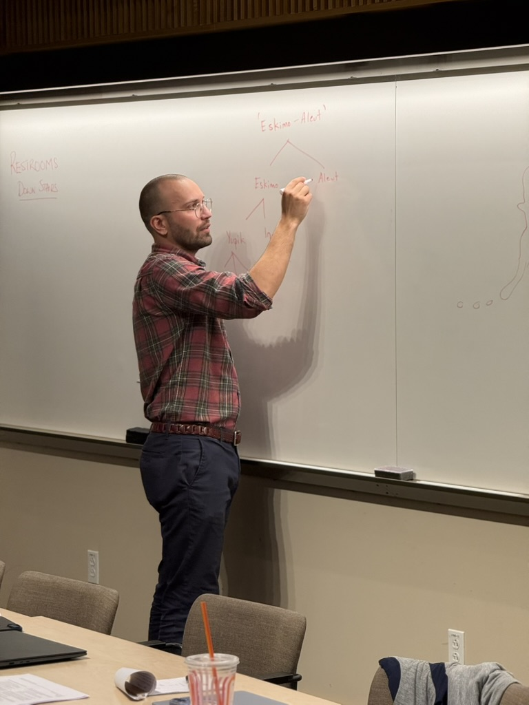
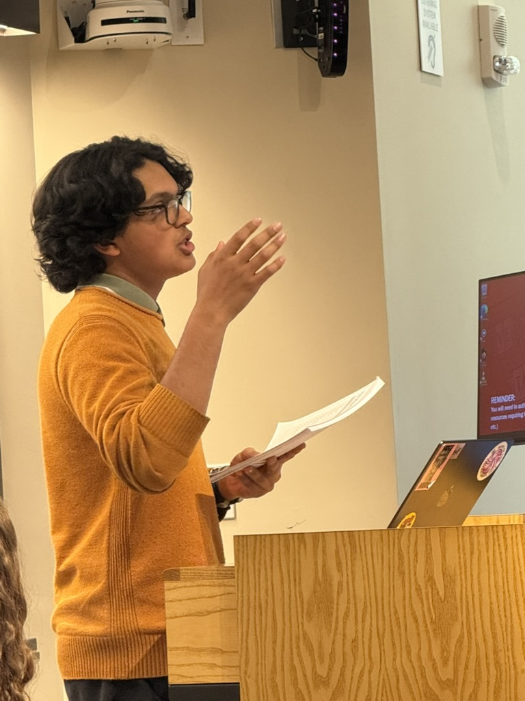

April 5, 2026 · Fong Auditorium, Harvard University · Cambridge, MA
LWI Conference on Endangered Languages
Our inaugural in-person conference brought together students, scholars, and academic partners for a full day of language documentation, research presentations, and a live transcription workshop. Sponsored by Harvard’s Department of Linguistics.
Harvard University
Fong Auditorium
April 5, 2026
Cambridge, MA
“Thank you to Dr. Kaden Holladay for presenting & Harvard’s Department of Linguistics for allowing us to use the space — Fong Auditorium — on campus!”
— Lost Worlds Institute
Conference Recap
What Happened at the Conference
The conference featured three programming blocks: a keynote lecture from a Harvard linguist, a student research presentation, and The Care Lab community transcription activity.
1
Keynote: Dr. Kaden Holladay
Harvard University · Department of Linguistics

Dr. Kaden Holladay, a linguist and lecturer at Harvard University, presented a talk on incorporation, focusing on Eskimoan. He shared a handout with variations on phrases to express the idea of linguistic “scope.” Then, using more puzzles, Dr. Holladay connected this to incorporation — invoking intuition in this area of linguistics.
The session gave students a live demonstration of the analytical thinking that drives linguistic research — connecting patterns across languages to reveal how human grammar organizes meaning. Dr. Holladay’s puzzle-based style made abstract concepts in morphosyntax immediately tangible for our high school researchers.
Materials — Dr. Holladay’s Handout: Incorporation and Meaning in EskimoanOpen PDF →
Misha Auchynnikau, Co-Director of Outreach, and Phoebe Austin, Manx researcher, presented their research on Manx, a Goidelic language. During their research process, the two led their six-person team and collaborated with Ms. Madeline Snigaroff, a PhD candidate from UChicago who mentored the group.
Their slides from the conference are below. Use the arrows to scroll through the presentation:
Manx Research Presentation — Misha Auchynnikau & Phoebe Austin
Manx (also known as Gaelg) is a Goidelic language likely derived from Primitive Irish, related to Irish and Scots Gaelic. Believed to have originated around the 13th century AD, with first recorded usage in 1615.
From the 15th to 20th centuries, Manx diverged considerably from Irish and Scots Gaelic.
During the 18th century, England suppressed Manx in schools & churches on the island.
In 2009, UNESCO incorrectly declared Manx extinct — sparking outrage and renewed effort.
The 21st century has seen increased revitalization, including by Lost Worlds Institute.
Slide 02 / 09
Overview of Manx Culture
Many aspects of Manx culture derive from its Gaelic and Celtic roots, as well as its proximity to the United Kingdom.
Most surviving literature has a religious context — primarily Anglican Christianity.
Traditional foods: smoked fish, scallops (Manx Queenies), and Bonnag (traditional bread).
Folklore: Moddey Dhoo (ghost-black dog of Peel Castle), Glashtyn (water-dwelling shapeshifter).
The Isle hosts the TT motorcycle race since 1907 — a pillar of Island identity and economy.
2. Compiling Shared Findings — Researchers compile into shared documents and mutually review.
3. Formatting with Experts — Research is typed and formatted with PhD mentor guidance (Ms. Madeline Snigaroff, UChicago).
Slide 04 / 09
Phonology & Orthography
Phonology: Manx distinguishes “slender” vs “broad” consonants — a feature shared with Irish and Scots Gaelic that fundamentally shapes the phonemic inventory.
Orthography — Notable features:
Ç ç (couyll lesh cedilla) denotes /tʃ/ in the digraph [çh]
Diaeresis [̈] separates vowel sounds and marks irregular plural formations
Spelling conventions remain unstandardized — an active area of debate among speakers
Slide 05 / 09
Morphology — Nouns & Verbs
Noun Classes: 5 classes with subclasses. Classes make no masculine/feminine distinction.
ymmyrkey + ta shin = ta shin gymmyrkey
“bearing” + “to be” (1pl) = “we are bearing”
Table forynsee (to learn):
t’ad gynshagey they are learning
jean ad gynshagey? will they learn?
jean gynshagey! learn!
ren ad gynshagey they learned
Slide 07 / 09
Syntax — VSO Word Order
Manx uses VSO (Verb-Subject-Object) order — one of the defining features of Goidelic languages:
Hug yn saggyrt e laue urree.
put-PRET the priest his hand on her. ‘The priest put his hand on her.’
Cha jarg shiu fakin red erbee.
not can you-PL see-V.N. anything. ‘You all can’t see anything.’
Slide 08 / 09
Preservation: Learning from Irish
Can Manx be preserved like Irish? The team examined these Irish preservation tactics:
Gaelscoilenna — State-sponsored and private schools teaching Irish-based curricula
Modern Cultural Adaptation — Irish bands, artists, fashion brands, and movies centered on heritage
Regional State Agencies — Government financial and educational support to Irish-speaking regions
The Manx revival is already underway — with Bunscoill Ghaelgagh (Manx-medium primary school) producing new speakers. LWI’s documentation contributes to this effort.
Slide 09 / 09
Research Paper Coverage
The published research paper covers four areas:
Phonology Phonemic inventory & slender vs. broad consonant distinction
Syntax VSO sentence order, modal/auxiliary verbs, semantics
Mentored by Madeline Snigaroff (UChicago PhD Candidate): “I am impressed at the scope and conclusions you guys draw.”
1 / 9
3
The Care Lab
Community-Sourced Transcription Activity · Siddharth Chopra, President

For the final part of the conference, Siddharth Chopra, President, presented an intro to the International Phonetics Alphabet (IPA) and phonetics. Then, the audience was released into small groups to work on a community-sourced transcription activity — The Care Lab.
Everyone used an LWI-built website that served as an interactive tool for transcription. The website provides audio recordings of under-resourced or endangered languages. Users enter their suggested “solution” for the transcription. Their entry is saved to a database which we are using to build a pool of community-sourced transcriptions and documentation.
holladay-handout.pdf — Incorporation and Meaning in Eskimoan (Harvard, 04/05/26)Open in new tab →
Where Our PhD Mentors & Speakers Are From
Where Our PhD Mentors
Mentored & Reviewed by Leading Scholars
amp; Speakers Are From
We are a student-run organization that works with faculty and PhD researchers from some of the world’s best research universities. Our student research teams are paired with PhD mentors who review, guide, and in some cases co-publish their work.